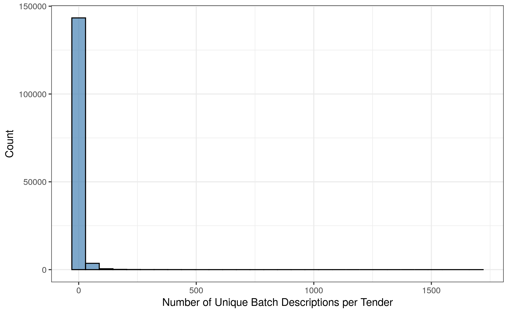

4 Context Groupings
4.1 Context Information Fields
QUESTION: What description granularity is best, keeping in mind that we want to extract the purpose/context of an item within a tender, and not descriptions that are too item-specific?
OPTIONS:
detalle(fromllamado): highest level tender descriptiondescripcion(fromllamado_grupo): middle level batch description
It seems that most batch descriptions within a tender are identical, and very few tenders have batches with multiple different descriptions. Below is a summary of the number of unique batch descriptions per tender, which shows that the vast majority of tenders have around 1 or 2 different batch descriptions:
| Min. | 1st Qu. | Median | Mean | 3rd Qu. | Max. |
|---|---|---|---|---|---|
| 1 | 1 | 1 | 4.589865 | 2 | 1692 |

Let’s explore the tenders with the highest number of different batch descriptions:
| Tender Description |
|---|
| Adquisicion De Textos Eductativos |
| Adquisicion De Reactivos, Gases Especiales, Vidrios Y Elementos De Laboratorio |
| Adquisición De Reactivos E Insumos De Laboratorio Para Programas De Salud Y Laboratorio Central |
| Adquisicion De Productos Quimicos Y Medicinales Para La Facultad De Ciencias Medicas, Hospital De Clinicas Y El Centro Materno Infantil |
| Adquisicion De Libros Para La Facultad De Derecho |
| Adquisición De Libros Para La Biblioteca |
| Adquisicion De Medicamentos E Insumos Medicos Y Odontologicos |
| Para Adquisicion De Repuestos, Cubiertas, Baterias Y Otros Para Vehiculos De La Dinac |
| Adquisicion De Productos Quimicos Y Medicinales Para La Facultad De Ciencias Medicas, El Hospital De Clinicas/Sajonia - San Lorenzo |
| Adquisicion De Productos E Instrumentales Quimicos Y Medicinales |
| Adquisicion De Medicamentos, Insumos, Reactivos Y Productos Odontologicos Varios |
| Adquisicion De Libros Para La Biblioteca De La Facultad |
| Lpn N° 01/12 Adquisicion De Reactivos E Insumos Para Laboratorio Central De Salud Publica |
| Para La Adquisición De Articulos De Ferreteria |
| Adquisicion De Libros Para La Biblioteca Del Congreso De La Nación |
| Adquisicion De Reactivos Quimicos E Insumos De Laboratorio, Con Equipos En Comodato. |
| Adquisicion De Medicamentos, Insumos, Reactivos Y Productos Odontologicos Varios |
| Adquisicion De Reactivos Quimicos E Insumos De Laboratorio, Con Equipos En Comodato |
| Adquisicion De Productos E Instrumentales Quimicos |
| Adquisicion De Repuestos Y Accesorios Mayores Para Aeronaves |
| Adquisición De Libros Para La Facultad De Derecho Y Ciencias Sociales Una |
| Adquisicion De Insumos Varios Para La Municipalidad De Asuncion |
| Adquisicion De Reactivos E Insumos Para Hospitales Especializados Y Laboratorio Central De Salud Publica |
| Adquisicion De Repuestos Mayores Para Aeronaves (Ad Referendum) (Plurianual) |
| Lpn N° 51/2017 Adquisicion De Insumos Y Reactivos Para Laboratorio Central De Salud Publica - Cobertura 24 Meses Del Msp Y Bs |
| Adquisición De Libros Para La Biblioteca Y Archivo Central Del Congreso Nacional |
| Adquisición De Libros Para La Dirección General De Cultura Y Turismo |
| Adquisición De Materiales Bibliográficos Para El Instituto De Trabajo Social Dependiente Del Rectorado Una |
| Adquisición De Libros Para La Biblioteca Y Archivo Central |
| Adquisición De Libros Para La Biblioteca Y Archivo Central Del Congreso Nacional |
Tenders that have batches with many different descriptions tend to consist of:
- books / educational materials (case in which the description of each batch might include the book title)
- laboratory substances and/or chemical supplies
- medicine and hospital products
- batteries and spare parts for cars
CONCLUSION: It seems best to focus on detalle from llamado (the highest level tender description).
4.2 Most Frequent Words
Below are the 30 most frequent words in the tender descriptions, along with the proportion of items for which that tender keyword appears:

The top 100 most frequent words in tender descriptions are listed below:
vehiculo, construccion, oficina, plurianual, referendum, util, insumo,
material, menor, repuesto, articulo, electrico, aula, edificio, ferreteria,
institucion, nacional, vario, provision, limpieza, llamado, laboratorio,
hospital, central, abierto, accesorio, reactivo, papel, varia, tinta,
educativa, maquinaria, departamento, aire, herramienta, preventivo, obra,
justicia, elemento, escuela, medicamento, correctivo, toner, fonacide, marca,
electoral, informatico, distrito, muebl, centro, segundo, alimenticio,
municipal, acondicionador, comedor, libro, quimico, ciudad, medico, ceremonial,
alimento, ampliacion, seguro, sanitario, facultad, fotocopiadora, asuncion,
gastronomico, pintura, salud, cocina, carton, impresion, local, bano,
instalacion, parque, automotor, publica, ministerio, empedrado, dependencia,
infraestructura, impresora, general, cordillera, modalidad, persona, regional,
sistema, ciencia, impreso, camara, escritorio, refaccion, evento, basica,
cubierta, licitacion, mejoramiento4.3 Most Frequent Word Associations
It is important to see how associated these words are, in order to help us identify words that commonly occur together in tender descriptions. The table below shows the top 20 most associated word pairs (i.e., the word pairs that most commonly appear together, as measured using the Pearson correlation of the indicator variables):
| First Word | Second Word | Correlation |
|---|---|---|
| preventivo | correctivo | 0.93 |
| justicia | electoral | 0.91 |
| parque | automotor | 0.87 |
| facultad | ciencia | 0.82 |
| aire | acondicionador | 0.82 |
| oficina | util | 0.78 |
| llamado | segundo | 0.75 |
| impresora | impreso | 0.72 |
| limpieza | elemento | 0.70 |
| articulo | ferreteria | 0.69 |
| tinta | toner | 0.68 |
| institucion | educativa | 0.67 |
| comedor | cocina | 0.66 |
| infraestructura | mejoramiento | 0.62 |
| papel | carton | 0.60 |
| alimento | persona | 0.58 |
| abierto | modalidad | 0.57 |
| camara | cubierta | 0.55 |
| escuela | basica | 0.53 |
| material | electrico | 0.51 |
4.4 Most Influential Words
Further, we fit a linear regression model based on an indicator associated with each of the top 100 words, to see which ones are most highly associated with our respose (the unitary price). The table below shows the top 20 words with the highest absolute coefficient in the simple linear regression:
| Word | Absolute Regression Coefficient |
|---|---|
| alimenticio | 3.22 |
| impresion | 3.11 |
| carton | 3.05 |
| alimento | 2.93 |
| papel | 2.88 |
| util | 2.61 |
| elemento | 2.60 |
| persona | 2.55 |
| escritorio | 2.45 |
| seguro | 2.31 |
| limpieza | 2.30 |
| medicamento | 2.29 |
| sistema | 2.23 |
| correctivo | 2.21 |
| marca | 2.19 |
| preventivo | 2.19 |
| articulo | 2.17 |
| ferreteria | 2.06 |
| material | 1.81 |
| muebl | 1.77 |
4.5 Final Context Groupings
Based on these tables, we have manually compiled a list of context groupings with their corresponding string patterns:
- Food:
"alimento"or"alimenticio" - Vehicle:
"vehiculo" - Construction:
"construccion","edificio", or"obra " - Hardware:
"ferreteria"or"herramienta" - Preventive Corrective:
"preventivo"or"correctivo" - Real Estate:
"inmuebl" - Office:
"oficina","tinta","toner","papel","fotocopiadora","impreso", or"impresion" - Specialized Supplies:
"insumo" - Cleaning:
"limpieza" - Politics:
"electoral"or"justicia" - Medical:
"hospital","medicamento","medico","hemato", or"onco" - Chemical:
"reactivo","laboratorio","quimico", or"quimica" - Insurance:
"seguro" - Specific Brand:
"marca " - Electricity:
"electric" - Kitchen:
"cocina","comedor", or"gastronomic" - Computer:
"informatico"or"computadora" - Air Conditioning:
"aire"or"acondicionado" - Spare Part:
"respuesto" - Machine:
"maquinaria" - Fuel:
"combustible"or"diesel"
Around 70% of items fall under at least one of the above groupings. Fitting a linear regression model using only the indicator variables based on these groupings, we manage to account for almost 19% of the variability in unitary prices, which is extremely promising:
| F(21,3282345) | 36084.1745 |
| R² | 0.1876 |
| Adj. R² | 0.1876 |
| Est. | S.E. | t val. | p | |
|---|---|---|---|---|
| (Intercept) | 12.1423 | 0.0023 | 5361.9510 | 0.0000 |
| foodTRUE | -3.2897 | 0.0086 | -380.9883 | 0.0000 |
| vehicleTRUE | 0.7931 | 0.0045 | 175.6510 | 0.0000 |
| constructionTRUE | 0.4307 | 0.0039 | 109.1456 | 0.0000 |
| hardwareTRUE | -1.6044 | 0.0068 | -236.2270 | 0.0000 |
| preventive_correctiveTRUE | 1.5202 | 0.0106 | 143.9135 | 0.0000 |
| real_estateTRUE | 2.3152 | 0.0266 | 87.1959 | 0.0000 |
| officeTRUE | -1.6542 | 0.0043 | -380.6688 | 0.0000 |
| specialized_suppliesTRUE | -1.0580 | 0.0065 | -163.7480 | 0.0000 |
| cleaningTRUE | -2.3169 | 0.0088 | -263.0913 | 0.0000 |
| politicsTRUE | 0.1428 | 0.0102 | 13.9352 | 0.0000 |
| medicalTRUE | -0.5435 | 0.0065 | -83.1100 | 0.0000 |
| chemicalTRUE | -0.2402 | 0.0075 | -32.2029 | 0.0000 |
| insuranceTRUE | 1.2738 | 0.0128 | 99.7132 | 0.0000 |
| specific_brandTRUE | 1.2005 | 0.0111 | 108.0571 | 0.0000 |
| electricityTRUE | -1.3175 | 0.0069 | -190.8420 | 0.0000 |
| kitchenTRUE | -0.9701 | 0.0085 | -113.7696 | 0.0000 |
| computerTRUE | 1.4072 | 0.0108 | 130.8460 | 0.0000 |
| air_conditioningTRUE | 0.5920 | 0.0097 | 60.9804 | 0.0000 |
| spare_partTRUE | -0.9954 | 0.0413 | -24.1000 | 0.0000 |
| machineTRUE | 0.8762 | 0.0102 | 85.9189 | 0.0000 |
| fuelTRUE | -1.9991 | 0.0418 | -47.8257 | 0.0000 |
| Standard errors: OLS |
4.6 Implementation Conclusions
A total of 21 context indicator variables (listed above) were created based on the cleaned-up tender descriptions. Each indicator variable corresponds to certain specific string patterns, and the variable will be TRUE for a particular observation if that observation’s clean tender description matches those patterns. Otherwise, the indicator variable will be FALSE.